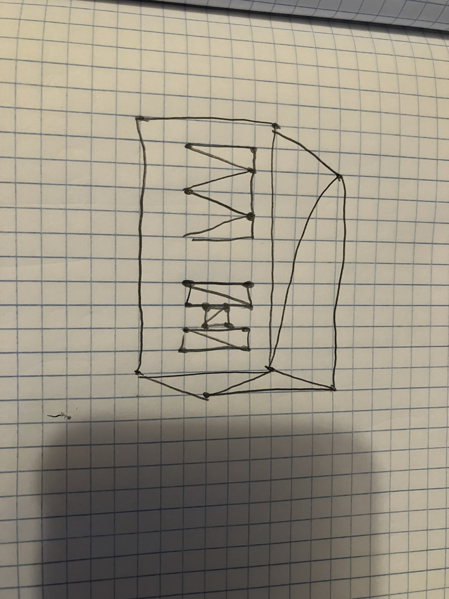

Point Triangle Circle Clear Draw Picture
Red Green Blue
Size Segments
Awesome feature: drag on the canvas to paint continuously.
Replace my-drawing.jpg with your photo of the hand-drawn sketch for the assignment.
my-drawing.jpg
